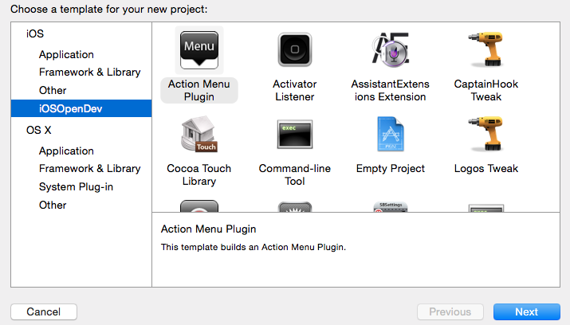
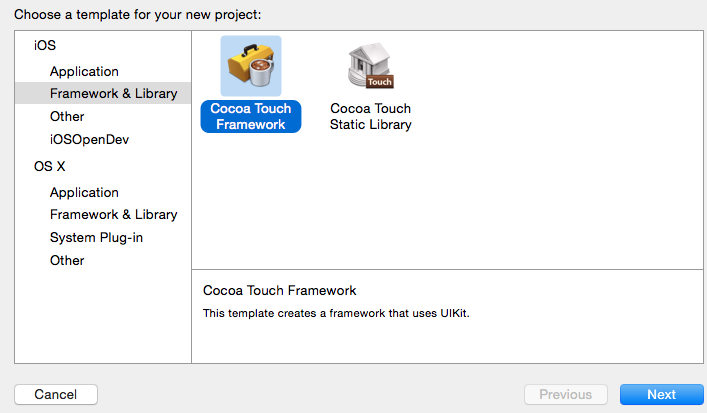
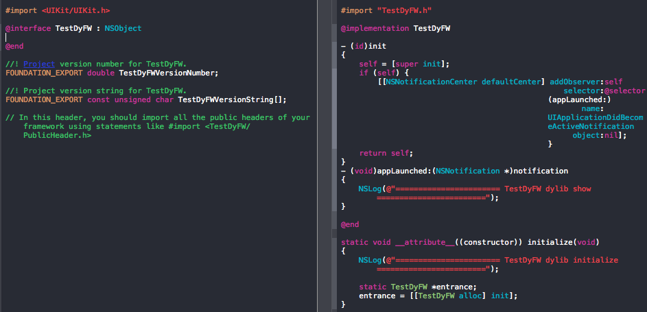
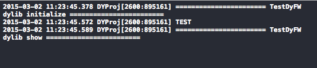
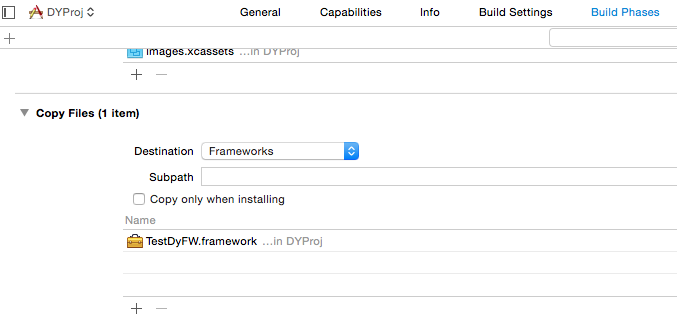

WWDC2014上发布的Xcode6在iOS上开放了动态库，可以直接通过xcode6*版本进行构建自己的framework动态库，具体可以参见New Features in Xcode 6至于具体能不能通过Appstore的审核，尚不清楚。
本文着重描述如何生成打包dylib动态库文件，对于生成dynamic framework请参见blog WWDC2014之iOS使用动态库。
XCode默认的动态库打包格式是.framework，我需要打包.dylib格式用于在越狱机器上向其它app动态注入动态库，以完成一些比较好玩的事情，默认的方式显然不能满足要求。
感谢万能的google，让我查到了这个好东西iOSOpenDev，这个工具用于越狱插件的开发，正好满足要求。
1、安装iOSOpenDev
下载最新的1.6.2，点击安装。安装过程中可能会出现失败，可以通过点击"cmd+l"查看安装日志。
在安装器日志中选择所有日志：

日志中能看到安装过程中都做了什么，出现的错误程序员一般都能自行解决好。
如果安装成功后，可以在xcode上看到下图的内容

2、新建dynamic framework工程
注意：此处选择的是xcode默认提供的dynamic framework，不是iOSOpenDev的。bulid set中“Mach-O Type” 请选择 Dynamic Library。

一顿下一步后，会生成一个和工程名同名的h文件，该文件会在该动态库注入到工程的时候init。如果想做更多的事情，需要自行添加m文件，并覆写Init方法，如下图：

完成后"cmd+b"，找到工程生成的framework文件（注意：动态库在模拟器和真机下不同，具体可以参见文章，因此需要保证framework在build时device和iOS工程device一致）。将改framework导入到任意iOS工程下，启动工程，查看log，如下图：

在iOS工程运行时可能会出现下面的错误：
dyld: Library not loaded: @rpath/*****
Referenced from: /Users/******
Reason: image not found
这是由于framework没能打包时copy进工程导致，解决办法是在工程的对应target的Build Phases设置中，将该framework导入到Copy files选项中，并将Destionation选择未framework。

3、将.dynamic文件打包为.dylib文件
此时必须已经正确安装iOSOpenDev，否则会出现lib不能找到的error。此处感谢万能的stackoverflow，很简单，就不做翻译了，
- 1. Open the file project.pbxproj (found inside the Xcode project file bundle) in a Text Editor. Search for string "producttype", change it’s value to com.apple.product-type.library.dynamic;(此处原来值未com.apple.product-type.framework)
- 2. "Installation Directory" set to @executable_path/ because I plan to put the dylib in the same directory as the app’s executable.
- 3. "Mach-O Type" set to Dynamic Library
- 4. "Executable Extension" set to dylib
- 5. "Executable Prefix" set to empty
完成以上5步，"cmd+b"编译成的文件就变成.dylib文件了。
注：以上两种方式都只支持到iOS7，不向下支持